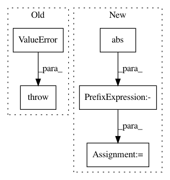

7f3b78d86570d717b115e86f1c8b75d31575b5d3,mvpa2/tests/test_surf.py,,_assert_array_equal_eps,#Any#Any#Any#,169
Before Change
def _assert_array_equal_eps(x, y, eps=.0001):
if x.shape != y.shape:
raise ValueError("not equal size")
xr = np.reshape(x, (-1,))
yr = np.reshape(y, (-1,))
After Change
xr = np.reshape(x, (-1,))
yr = np.reshape(y, (-1,))
delta = np.abs(xr - yr)
m = -(delta <= eps)
if ((any(-np.isnan(xr[m])) or any(-np.isnan(yr[m])))):
raise ValueError("arrays differ more than %r" % eps)
In pattern: SUPERPATTERN
Frequency: 3
Non-data size: 5
Instances
Project Name: PyMVPA/PyMVPA
Commit Name: 7f3b78d86570d717b115e86f1c8b75d31575b5d3
Time: 2012-08-21
Author: nikolaas.oosterhof@unitn.it
File Name: mvpa2/tests/test_surf.py
Class Name:
Method Name: _assert_array_equal_eps
Project Name: ntucllab/libact
Commit Name: e81142f0869321cd8792e13bfc4f6fb85d9f1efc
Time: 2015-12-22
Author: yangarbiter@gmail.com
File Name: libact/query_strategies/uncertainty_sampling.py
Class Name: UncertaintySampling
Method Name: make_query
Project Name: mne-tools/mne-python
Commit Name: fa91217b895957c4106d6175e27d72a48f4f05dc
Time: 2019-01-12
Author: jnu@iki.fi
File Name: mne/viz/topo.py
Class Name:
Method Name: _plot_evoked_topo